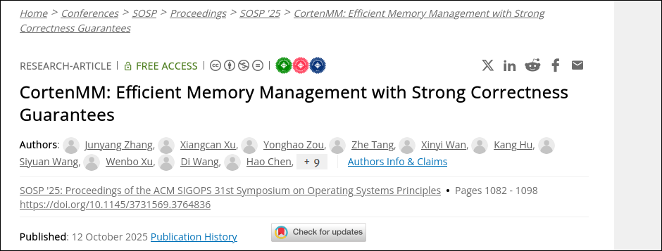
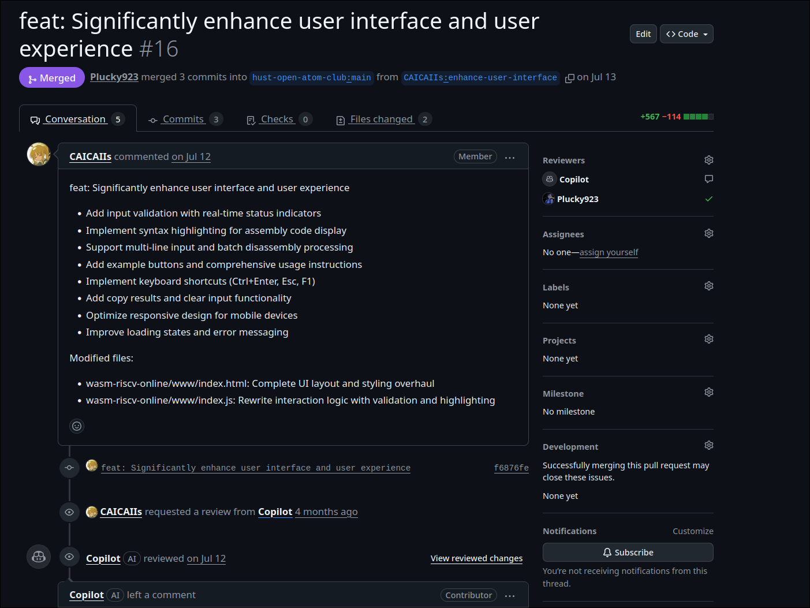
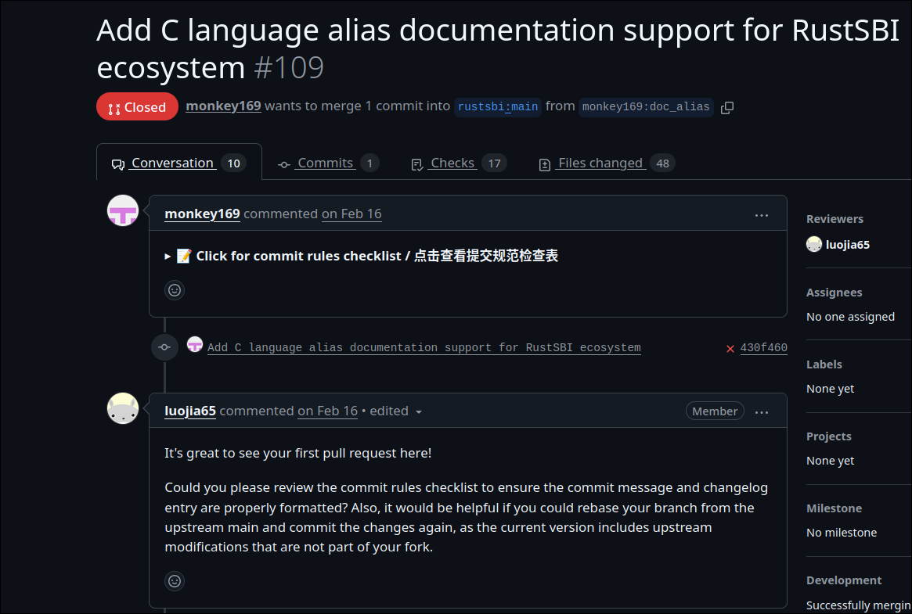

开源驱动中国科技自立：APEC视野下的人才·产业·教育调研
主题调研与案例分析

开源：建设教育强国的战略先手棋
教育兴则国家兴
习近平总书记指出：“教育是国之大计、党之大计。”开源以“共建共享”理念，服务中华民族伟大复兴战略需求。
坚持党的领导，推进开源进教材、进课堂、进头脑。
开源赋能高质量教育
- 构建德智体美劳全面培养体系
- 产教融合、校企合作培养技术技能人才
- 在线教育、社区学习推动终身教育
开源实现教育公平与资源均衡。
开源是教育强国建设的“先手棋”，培养担当民族复兴大任的时代新人。
开源：实现高水平科技自立自强的核心引擎
创新是第一动力
开源打破技术垄断，助力“卡脖子”领域突破，如芯片、操作系统。
面向“四个面向”，开源构建全链条创新生态。
制度优势驱动开源
- 集中力量办大事：国家实验室、开源社区协同攻关
- 企业创新主体：华为、阿里主导RISC-V开源项目
- 国际合作：共建共享，避免封闭排外
开源是科技自立自强的关键路径。
开源践行“科技是第一生产力”，为高质量发展注入不竭动力。
开源：加快建设人才强国的战略资源
开源社区
青年人才
代码贡献、社区实践
教育链
产教融合、开源课程
产业链
企业需求、项目落地
开源实现教育链、人才链、产业链、创新链“四链融合”，警惕“技术异化”。
举措：OSPP计划、CIE大赛、万人计划吸引全球英才。
国产芯片硬件产业：国际现状与发展
全球格局
X86/ARM主导，英特尔/高通垄断；中国易被“卡脖子”。
国际制裁下，硬件自立迫在眉睫。
中国技术进展
- 麒麟/龙芯系列
- AI芯片如寒武纪
- 制造工艺追赶台积电
结合APEC创新，推进数据流动与开源硬件。
硬件产业从依赖到自主，需开源软件支撑。
RISC-V生态：软件+硬件融合
硬件层面
- 开源指令集，灵活定制
- 应用于IoT/服务器
- 中国企业如阿里/华为主导
国际合作中，实现自立。
软件层面
- OpenEuler适配
- 深度学习框架迁移
- EDA工具开源
软硬协同，生态瓶颈待破。
RISC-V践行开源理念，推动产业科技升级。
学术前沿：开源赋能教育科研
Asterinas项目：Rust安全OS获SOSP 2025最佳论文
蚂蚁集团田洪亮主导的Asterinas（星绽）项目——一款基于Rust的Linux ABI兼容帧内核开源安全操作系统，以中国南方科技大学Yuke Peng为第一作者，荣获ACM SOSP 2025最佳论文奖。
该项目通过Rust内存安全机制，构建最小化可信计算基（TCB），显著提升系统鲁棒性。
开源对教育科研的作用：
- 促进教育：开放代码便于学生/研究者贡献，培养跨界人才
- 驱动科研：全球协作验证内核，加速创新迭代
- 服务产业：企业需求反哺学术，产学研深度融合
契合习近平总书记APEC讲话：“深化技术开源开放合作，创建具有竞争力的开放创新生态。”
获奖论文：
Asterinas以开源实践，贯通教育-科技-人才链条，助力中国式现代化。
组员开源贡献：缪宇轩与郑天诣实践
缪宇轩贡献
参与RISC-online反汇编工具优化，PR合并RustSBI。
提升开发者易用性，反哺航天设备。
郑天诣贡献
OpenEuler深度学习框架迁移，平台优化。
基础软件贡献，助力生态成熟。
启示与展望：开源引领教育·科技·人才融合
教育启示
- 开源式学习，培养时代新人
- 产教融合，服务国家战略
科技启示
- 突破“卡脖子”，实现自立自强
- 开源共建，激活创新引擎
人才启示
- 社区实践锤炼技能，避免“技术异化”
- 聚天下英才，建设人才强国
拥抱开源，赢得未来——教育、科技、人才“三驾马车”并驾齐驱。
感谢聆听，欢迎讨论开源未来！
缪宇轩、郑天诣、苗雪冰、谭峻瀚